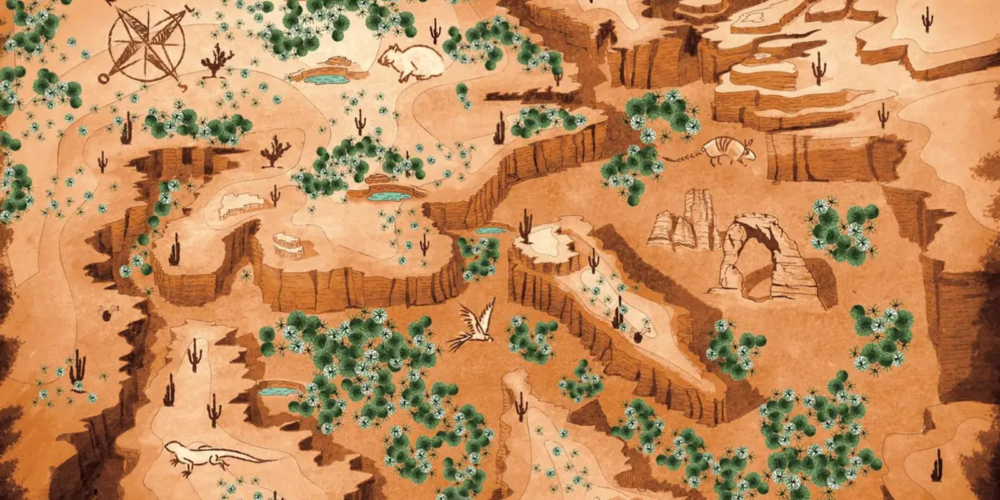

02 · Mapa
Cada versão marca um ou dois pontos.
Abrigos das quatro cores, o abrigo cinco estrelas e as caixas. Escolha uma versão: os círculos mostram o que muda em relação ao mapa sem marcação.
InterativoEscolha uma versão

Case 23 · Design gráfico de cena · Reality
Se Sobreviver, Case é o reality do Multishow e do Globoplay em que casais isolados numa ilha, só com itens básicos, testam o relacionamento antes de decidir se casam. Cada casal tem um abrigo de uma cor. O mapa ilustrado da ilha saiu em 21 versões em A3, cada uma com um ou dois pontos marcados, e junto com ele veio um manual de sobrevivência ilustrado.

01 · No ar
Na chamada do programa, o mapa ilustrado entra na tela com o X de cada abrigo. O botão abaixo pula direto para esse trecho.
A chamada tem nudez com tarja, como foi ao ar.
02 · Mapa
Abrigos das quatro cores, o abrigo cinco estrelas e as caixas. Escolha uma versão: os círculos mostram o que muda em relação ao mapa sem marcação.
03 · Manual
Páginas em A4 que ensinam a levantar o abrigo, filtrar água e achar comida no mangue e no semiárido. Clique para ampliar.